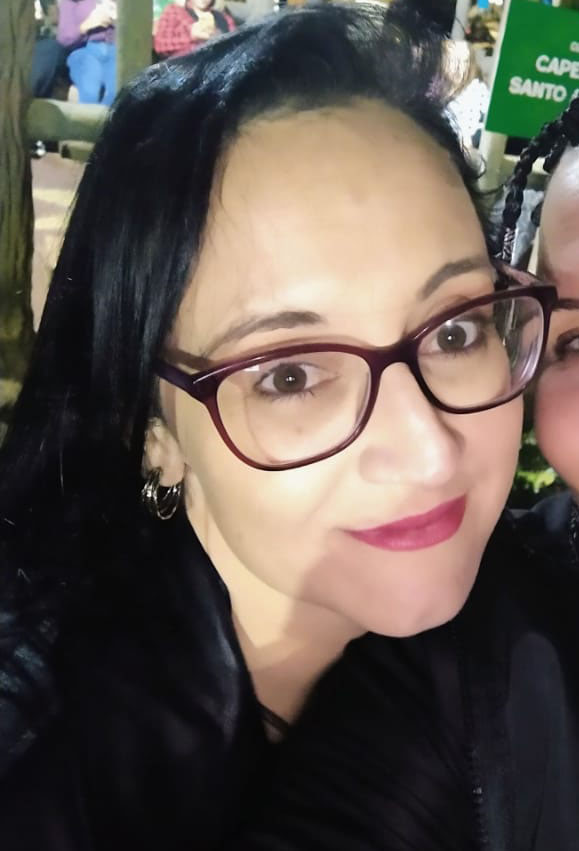

Sobre Mim

Olá! Sou Priscilla, uma profissional em transição de carreira, unindo as raízes criativas da Publicidade e Propaganda com a precisão técnica da Engenharia de Software. Acredito que a tecnologia não deve ser apenas funcional, mas também comunicativa e envolvente. Minha missão é fundir o olhar estratégico e estético da publicidade com o poder de execução da engenharia de software para desenvolver conteúdos e plataformas que ofereçam experiências superiores aos usuários. Para mim, o código é uma ferramenta de construção, mas a criatividade é o que dá alma aos projetos.
Além do Código e das Telas
Nem só de lógica e layouts vive meu cotidiano. Quando não estou estudando Java ou refatorando códigos, você provavelmente me encontrará:
- 📺 Imersa em narrativas: Adoro maratonar séries e explorar diferentes mundos através das telas.
- ✨ Explorando o invisível: Sou entusiasta de astrologia, magia e misticismo, temas que aguçam minha curiosidade sobre os padrões e mistérios do universo.
- 🐈Companhia felina: Sou uma "mãe de gatos" orgulhosa. Tenho dois gatinhos que são meus companheiros de home office e que amo muito.